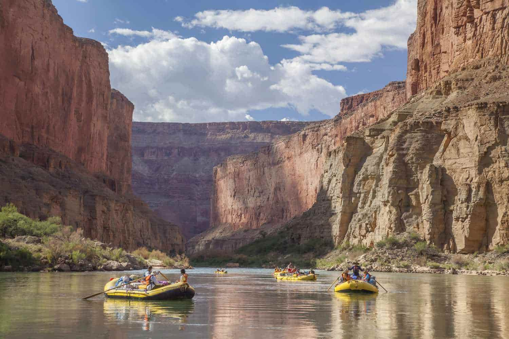
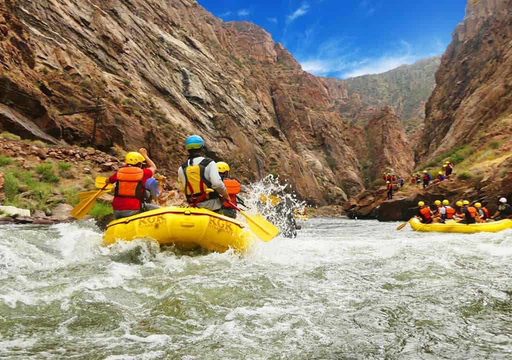
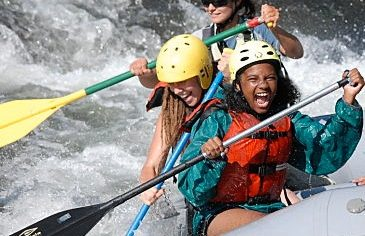
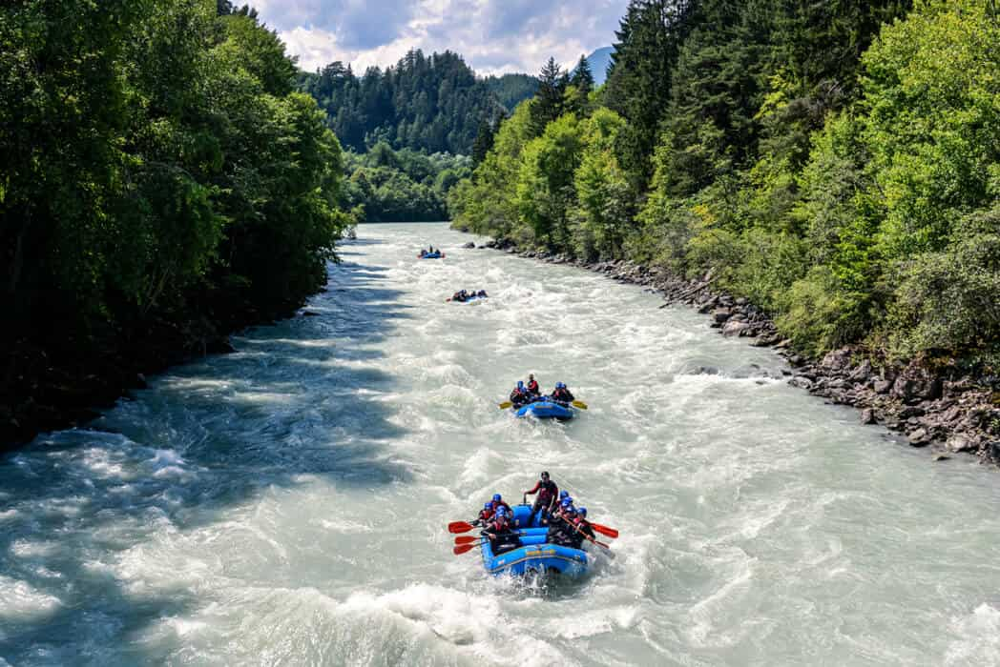

Our Trips
What Maria has to say about us?
“I was nervous when we started, but the first rapid instantly turned that fear into excitement. Every challenge pushed me, yet I felt safe the entire time thanks to the guides’ confidence and support. By the end, I felt proud, energized, and already thinking about coming back. This was my first rafting experience — but definitely not my last.”


Alexander had a great time as well
“I came in expecting an adrenaline rush, but the experience was bigger than that. The river demanded focus, teamwork, and trust from the very first rapid. Every wave felt like a challenge I had to meet, and with each one, my confidence grew. What stood out most was how controlled and safe everything felt, even in the most intense moments. By the end of the run, I was exhausted, smiling, and already planning my next trip. Rafting didn’t just push me — it reminded me how good it feels to fully commit to the moment.”


Check out Jennifer's experience!
“I didn’t realize how much I needed this until we hit the first rapid. Everything else faded away, and I was fully present with the river and the team. It was intense, exciting, and empowering, and even with the challenge I felt safe and supported the entire time. By the end, I was laughing, exhausted, and already thinking about when I could come back — rafting pushed me out of my comfort zone, and I loved every second of it.”


| Trips | Best Season | Price |
|---|---|---|
| Calm Current Cruise | March - May | $1350 - $1470 |
| First Rapid Journey | June - September | $1400 - $1600 |
| Express White Water | June - September | $1400 - $1600 |